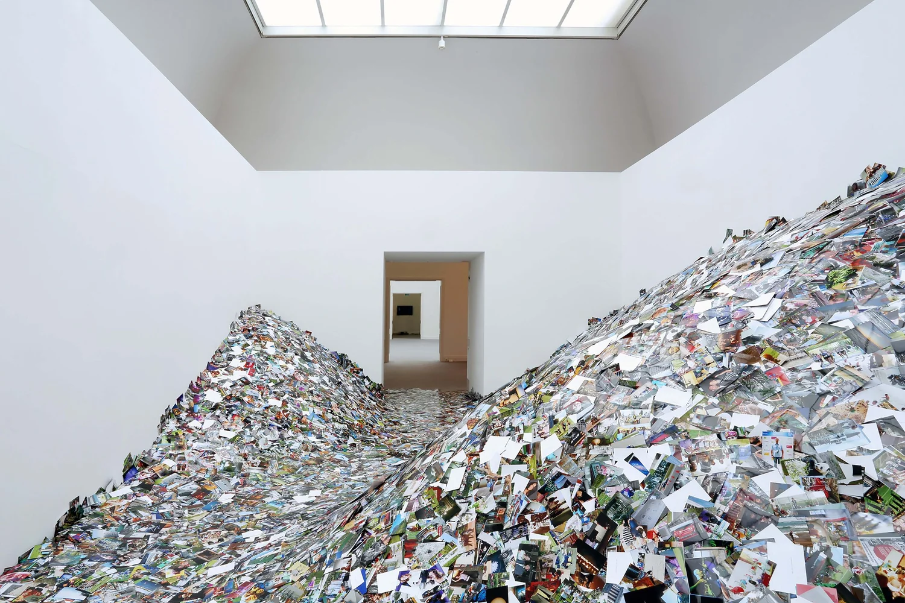
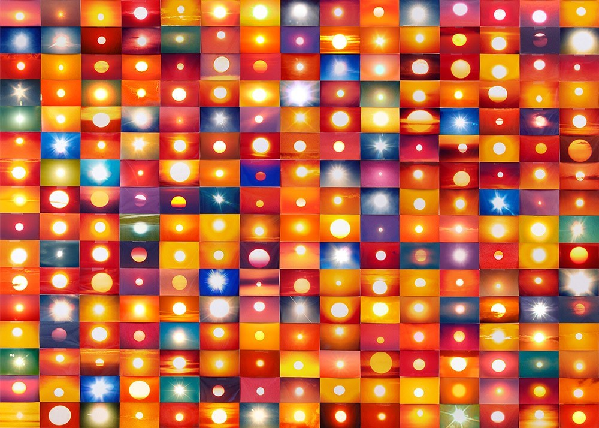
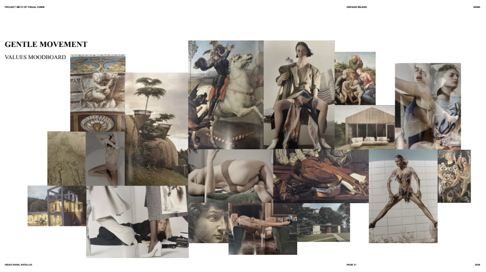
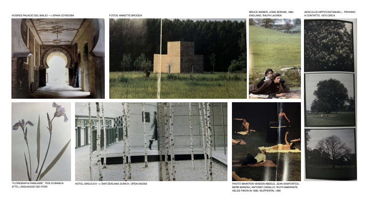
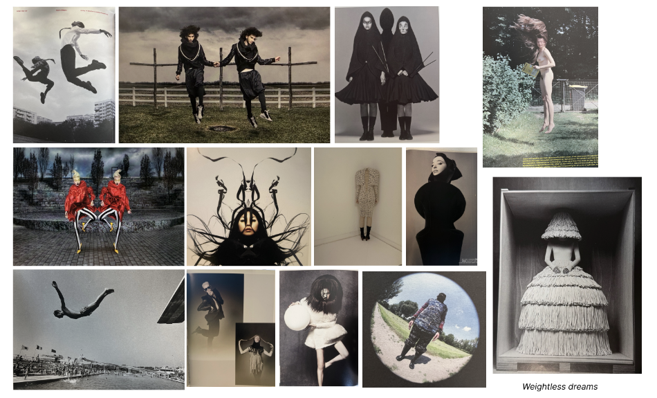

This year, I made library research a central part of my courses, as a tentative response to the increasing visual flattening across fashion communication.
Recent brand imagery has gradually converged around a limited set of dependable formats: clean lookbooks on plain backgrounds designed for algorithmic performance, or familiar seasonal narrative tropes — a beach setting for summer, a quiet city walk for understated luxury, sophisticated interiors to signal refinement. These are also the visual materials that now heavily populate the training data of generative AI tools, forming an aesthetic median that easily becomes repetitive, predictable, and often tasteless.
So this year, I asked students to begin in the library and build moodboards sourcing exclusively from printed matter: books, magazines, and physical archives. The starting point varies according to level: beginners work from previously identified brand values, while more advanced students are asked to visualize how they would position a chosen brand through image language.

From there, each student develops an individual editorial concept, which becomes the basis for a broader set of communication proposals: shooting series, collaborations, editorial projects, and visual directions. The analog reference does not disappear at this stage, but is gradually expanded through more immediate contemporary references as the work develops.

Two recurring challenges emerged. The first was an initial hesitation in approaching books — uncertainty around where to begin when there is no search bar. The second, more persistent one, was maintaining the visual specificity that emerged from the analog research once the work moved into actual project development. The pull toward familiar visual territory remains strong, as does the difficulty of sustaining coherence over time and across different projects.

Finding ways to keep students more anchored to their first intuitions, without turning the process into a constraint, is something I would like to explore further next year.